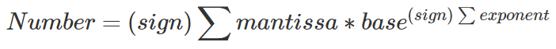
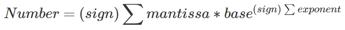
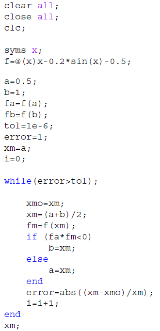
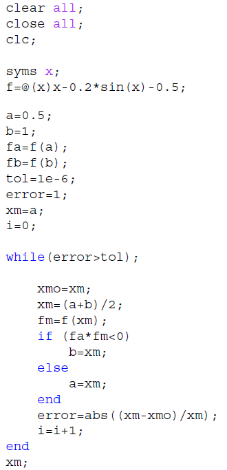
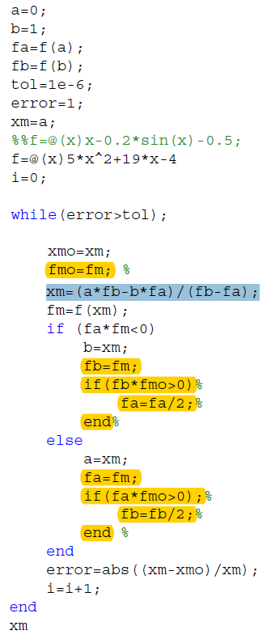
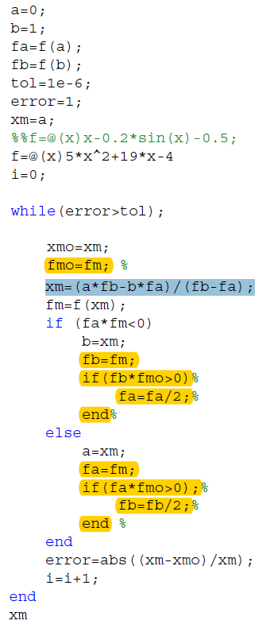
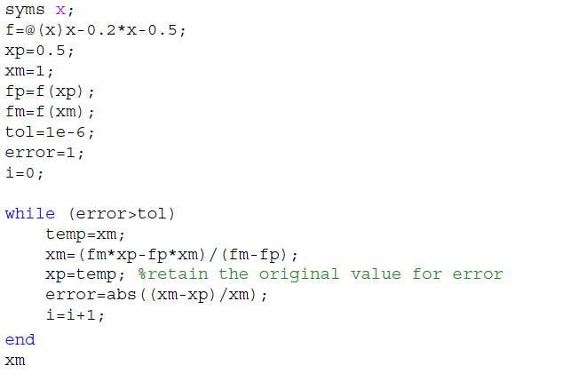
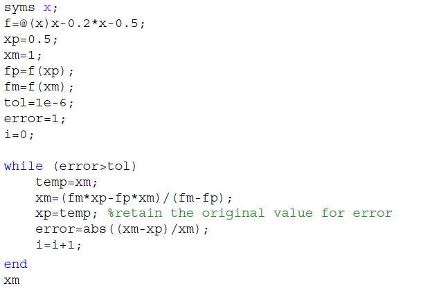

Relative error = (Best approxi. value - approxi. value) / Best approxi. value
Absolute error = true value - approxi. value
Accurary: how closely a computed or measured value compares with the true value
Precision: how closely individual computed or measured value agree with each other
ε = Machine epsilon = b (1 - t)(b: base, t= # of significant figures of mantissa
Machine epsilon: Largest relatvie error mode by a digital computer in storing an irrational number
Subtractive cancellation: The subtraction will produce 0s for the first several digits in the mantissa, by renormalization there would be less significant figure left (Question with e-x) (trancation error)
Absolute error = true value - approxi. value
Accurary: how closely a computed or measured value compares with the true value
Precision: how closely individual computed or measured value agree with each other
ε = Machine epsilon = b (1 - t)(b: base, t= # of significant figures of mantissa
Machine epsilon: Largest relatvie error mode by a digital computer in storing an irrational number
Subtractive cancellation: The subtraction will produce 0s for the first several digits in the mantissa, by renormalization there would be less significant figure left (Question with e-x) (trancation error)
none
Relative error = (Best approxi. value - approxi. value) / Best approxi. value
Absolute error
Accurary
Precision
ε
machine epsilon
Subtractive cancellation
Mantissa Math


none
Mantissa Math
Flow Chart

none
Flow Chart
Bisection Methods (not include iteration)


none
Bisection Methods
Regula Falsi (Modified Version are highlighted by yellow color)


none
Regula Falsi (Modified are highlighted by yellow color)
Secant Method

Secant Method & Falsi Method both use same approach
Falsi Method make [a, b] span around the root, while Secant Method only [xp, xm] change position of xm

none
Secant Method
Secant Method & Falsi Method both use same approach
Falsi Method make [a, b] span around the root, while Secant Method only [xp, xm] change position of xm